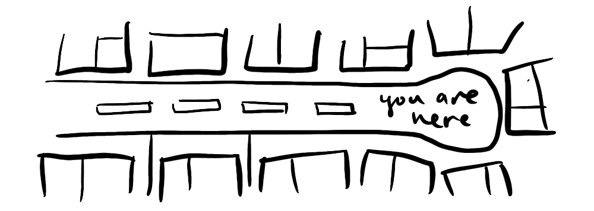

~ looks like you've discovered the secret 404 culdesac ~
Sorry about this, I'm doing my best to keep on top of all the pages. It's possible that this is an aspirational page that I haven't got to yet. I'm open to suggestions for what could go here. Please leave a comment if you found this page, I will be eternally in your debt.